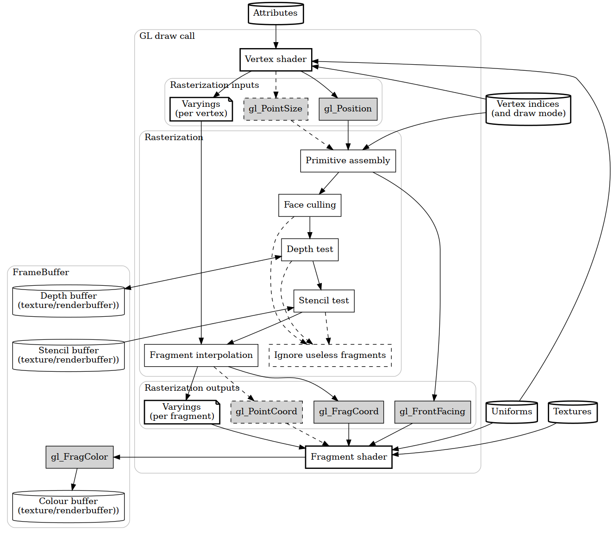
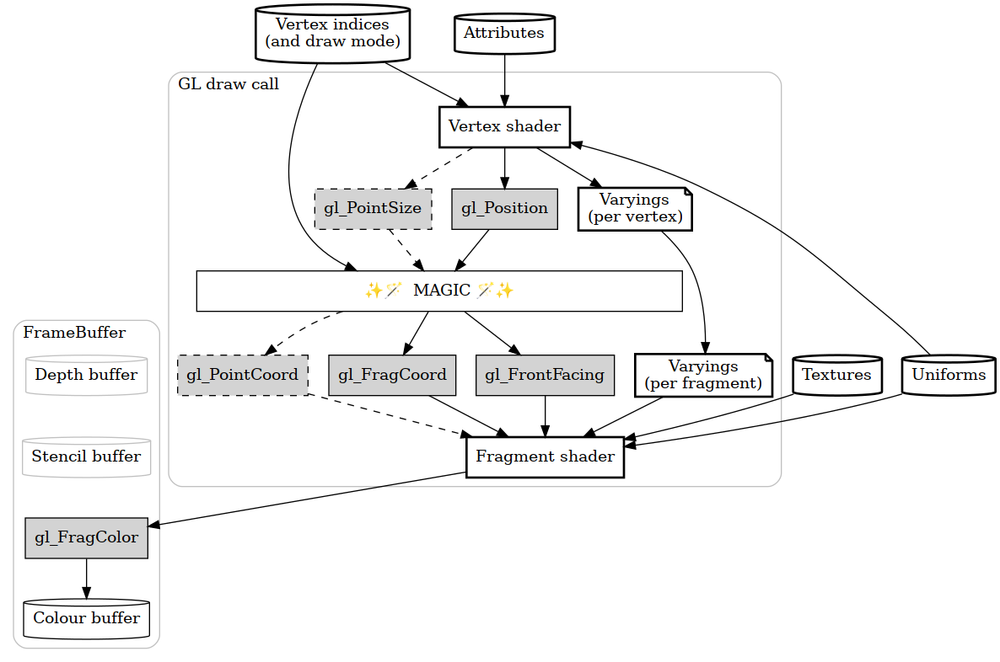
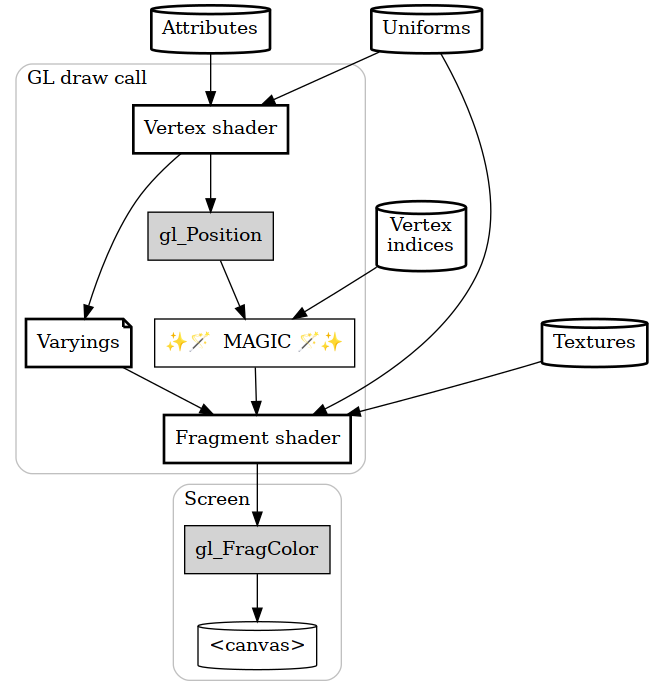
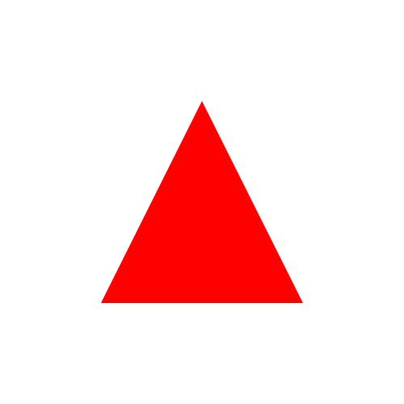
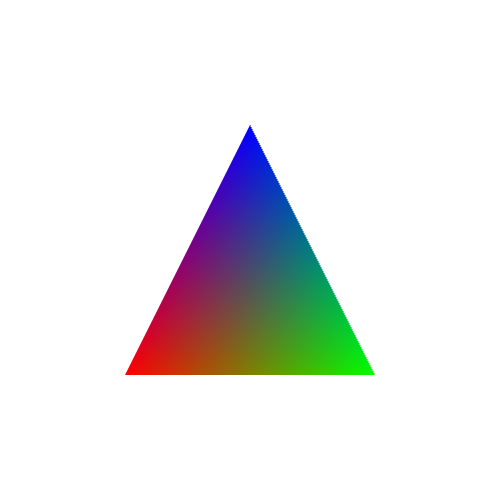

an introductory text, such as a school textbookEtymology: 14th Century: via Anglo-Norman from Medieval Latin primārius (liber) a first (book), from Latin prīmārius primary
WebGL is hard. Glii tries to make it easier to understand by making some concepts explicit and renaming a couple of things.
Whenever there's WebGL (or OpenGL, or DirectX, or Vulkan), there's something called a graphics pipeline. Data goes into one end, graphics come out of the other end.
But it's not as easy as that. There are several inputs, several outputs, and once a WebGL program is running, it's an undebuggable black box. It looks something like the following diagram (try to not get scared by it, it'll get better):

(In that diagram, bold boxes are things that a programmer can configure).
It's important to keep that in mind, specially when one wants to squeeze all the functionality from the pipeline. But, when learning, it's better to ignore some of the stuff and make that diagram simpler:

Even so, the most basic use cases can ignore even more stuff, so this is the simplest data pipeline for most use cases:

So the things that can be configured for a WebGL program call are:
gl_Positiongl_FragColorIf you are willing to waste a bit of paper, print the last diagram and the list. It can come in handy to make sense of the data inputs and outputs.
The goal of this document is an introduction to how glii works, not a complete course on OpenGL/WebGL. It's a good idea to complement this primer with some of the more general WebGL texts, such as:
Before diving into drawing triangles, let's make sure that a few basics of HTML and JS are covered.
I'm assuming that, if you're reading this, you already know a bit of HTML and JavaScript. If not, head to the MDN "Getting started with the Web" learning materials first.
One of the goals of Glii is steer clear of complex toolchains, so the only things that are needed are a text editor (any text editor) and a local webserver (any webserver).
Let's start from scratch, with a very empty webpage:
<!DOCTYPE html>
<html>
<head><meta charset="utf-8" /></head>
<body>
</body>
</html>
That webpage is going to need a <canvas> so glii can draw stuff into it, so let's change that into:
<!DOCTYPE html>
<html>
<head><meta charset="utf-8" /></head>
<body>
<canvas height="500" width="500" id="glii-canvas"></canvas>
</body>
</html>
And since we'll be doing JavaScript, we'll need a <script> somewhere. Since glii is written as JavaScript modules, that needs to be a <script type='module'>:
<!DOCTYPE html>
<html>
<head><meta charset="utf-8" /></head>
<body>
<canvas height="500" width="500" id="glii-canvas"></canvas>
<script type="module">
/* JavaScript goes here */
</script>
</body>
</html>
Then, we load the main glii module using import. If you never used imports in plain HTML+JS, the following code snippet is kinda similar to <script src='path_to_glii_files/index.mjs'>. Beware your relative/absolute URIs, and load glii's files from wherever it's appropriate.
<script type="module">
import { GLFactory as Glii } from "path_to_glii_files/index.mjs";
</script>
Glii exposes just one export - a JavaScript class named GLFactory. Give it a reference to a HTMLCanvasElement:
<script type="module">
import { GLFactory as Glii } from "path_to_glii_files/index.mjs";
const canvas = document.getElementById("glii-canvas")
const glii = new Glii(canvas);
</script>
Or, in a more compact form:
<script type="module">
import { GLFactory as Glii } from "path_to_glii_files/index.mjs";
const glii = new Glii(document.getElementById("glii-canvas"));
</script>
Please note that, like other libraries, glii uses camel case for naming: UpperCamelCase for classes, and lowerCamelCase for instances.
The glii instance of GLFactory doesn't have any funcionality by itself. Instead, it defines wrapped classes. The most basic functionality is provided by the WebGL1Clear class, which clears the <canvas> with the given colour.
Now, get an instance of WebGL1Clear (implicitly tied to the canvas) by doing new glii.WebGL1Clear(...).
The WebGL1Clear contructor takes one parameter, a key-value map of options. For this basic example, let's set the clear colour to 20% red, 30% green, 40% blue and full opacity by doing:
const clearOperation = new glii.WebGL1Clear({ color: [0.2, 0.3, 0.4, 1.0] });
Finally, the clear operation runs when its run() method is invoked, i.e.:
clearOperation.run();
Putting everything together, a complete example looks like:
<!DOCTYPE html>
<html>
<head><meta charset="utf-8" /></head>
<body>
<canvas height="500" width="500" id="glii-canvas"></canvas>
<script type="module">
import { GLFactory as Glii } from "path_to_glii_files/index.mjs";
const glii = new Glii(document.getElementById("glii-canvas"));
const clearOperation = new glii.WebGL1Clear({ color: [0.2, 0.3, 0.4, 1.0] });
clearOperation.run();
</script>
</body>
</html>
At this point, you should copy-paste that complete example into a new text file, change path_to_flii_files to the actual path where glii is available, and point your browser to your local development webserver to visit the page. Try changing the clear colour!
Remember to use the debugging tools available in your browser to check if there's anything wrong - javascript console section to look for errors, and network section to see if glii's index.mjs is being loaded from the right location.
If you cannot get this minimal example working, go back to the basics at MDN "Getting started with the Web" learning materials.
It's still a lot to take in, so for a first program let's not use any varyings, uniforms or textures. Let's do... a red triangle (like in one of the basic LearnOpenGL lessons):

The ✨🪄MAGIC🪄✨ shall need to assemble one triangle; this means three vertices each with their own position on the <canvas>, and we'll want those coordinates to be 2-dimensional (with X and Y).
The first thing to do is some preparations: there's a webpage that needs to have a <canvas>, and create a glii GLFactory pointing to that <canvas> (this will implicitly set the default output to that canvas):
<canvas height="500" width="500" id="glii-canvas"> </canvas>
<script type="module">
import { GLFactory as Glii } from "path_to_glii/index.mjs";
const glii = new Glii(document.getElementById("glii-canvas"));
/* rest of the JS code will go here */
</script>
The position coordinates of the vertices are stored in attributes. Think of attributes as a table. For this example, it will look like this:
| Vertex index | position.x | position.y |
| 0 | -0.5 | -0.5 |
| 1 | +0.5 | -0.5 |
| 2 | 0 | +0.5 |
So the next step is to define such a thing in glii. This javascript code will create a place to hold a single attribute (we want it to hold 2-dimensional coordinates, so the GLSL data type is vec2, short for 2-component vector):
const positions = new glii.SingleAttribute({ glslType: "vec2" });
...and fill in the data:
positions.set(0, [-0.5, -0.5]);
positions.set(1, [ 0.5, -0.5]);
positions.set(2, [ 0, +0.5]);
A glii SingleAttribute can hold data for a single attribute, for an indeterminate number of vertices. The GLSL type of the attribute it can hold is either float, vec2, vec3 or vec4.
Now let's set up a triangle with vertices 0, 1 and 2:
const indices = new glii.IndexBuffer({ size: 3 });
indices.set(0, [0, 1, 2]);
By default, an IndexBuffer will use the TRIANGLES draw mode (let's not get into other draw modes just yet), and it will assemble each triplet of vertex indices into one triangle.
Let's go onto the vertex shader; its job is to set the value of the predefined gl_Position variable. gl_Position is a 4-component vector (or vec4), and we'll have a vec2 attribute per vertex, so the code for this is gonna be:
void main() {
gl_Position = vec4(aPos, 0.0, 1.0);
}
That's not javascript, and that's not C. That's a programming language called GLSL, created for use within OpenGL/WebGL. It's C-like so it should feel familiar, but can handle 2-, 3- and 4-component vectors in some fancy ways. That vertex shader sets the X and Y components of gl_Position to the X and Y components of the aPos attribute, then the Z (3rd) component to zero, and the W (4th) component to 1.
(The Z component must be between -1.0 and 1.0, and the W component should be 1.0. If not, things might not draw as you expect because of how the ✨🪄MAGIC🪄✨ works.)
Why are we using values between -1.0 and 1.0, anyway? Shouldn't those be pixel coordinates? Well, OpenGL/WebGL works with something called normalized device coordinates (also known as clipspace or clip-space coordinates elsewhere). I'm gonna borrow an image from learnopengl.com to illustrate (image is CC-by 4.0 by Joey de Vries):
The only missing part is the fragment shader. We're doing red, so the code shall be:
void main() {
gl_FragColor = vec4(1.0, 0.0, 0.0, 1.0);
}
In there, gl_FragColor is set to a 4-component vector which corresponds to the RGBA (red/green/blue/alpha) values of the ouput colour; values must be between 0 and 1 (lower than 0 gets clamped up to 0, and higher than 1 gets clamped down to 1).
Also note that the number constants in GLSL code are 0.0 and 1.0 instead of 0 and 1 - this is because GLSL is nitpicky about integer constants and floating-point constants, and vecN variables are implied floating-point. A newbie mistake is to forget writing a . in the numbers, and shall trigger a compilation error.
Now that we have all the inputs ready (attributes, vertex indices, vertex shader and fragment shader), they can be tied together in a glii WebGL1Program:
const program = new glii.WebGL1Program({
attributes: { aPos: positions, },
vertexShaderSource: `
void main() {
gl_Position = vec4(aPos, 0.0, 1.0);
}`,
fragmentShaderSource: `
void main() {
gl_FragColor = vec4(1.0, 0.0, 0.0, 1.0);
}`,
indexBuffer: indices,
});
The only non-trivial thing there is that the SingleAttribute named position in javascript is gonna be named aPos in the GLSL code for the vertex shader. It's most usual to put a a at the start of all attribute names in GLSL (i.e. hungarian notation).
Putting everything together, this is how the whole webpage for this example looks like:
<!DOCTYPE html>
<html>
<head>
<title>Primer, 02: Red triangle</title>
<meta charset="utf-8" />
<link rel="icon" href="../docs/favicon.ico" />
</head>
<body>
<canvas height="500" width="500" id="glii-canvas"></canvas>
<script type="module">
import { GLFactory as Glii } from "../src/index.mjs";
const glii = new Glii(document.getElementById("glii-canvas"));
const positions = new glii.SingleAttribute({ glslType: "vec2" });
const indices = new glii.IndexBuffer();
indices.set(0, [0, 1, 2]);
positions.set(0, [-0.5, -0.5]);
positions.set(1, [ 0.5, -0.5]);
positions.set(2, [ 0, +0.5]);
const program = new glii.WebGL1Program({
attributes: { aPos: positions, },
vertexShaderSource: `
void main() {
gl_Position = vec4(aPos, 0.0, 1.0);
}`,
fragmentShaderSource: `
void main() {
gl_FragColor = vec4(1.0, 0.0, 0.0, 1.0);
}`,
indexBuffer: indices,
});
program.run();
</script>
</body>
</html>
At this point, you can try changing the coordinates of each vertex, and the output colour of the fragment shader.
The previous chapter skimmed through the GLSL language.
If you want to learn GLSL, one of the best resources out there is Patricio González's Book of Shaders. WebGL Fundamentals also covers some basics of GLSL.
However, if you already have experience working with GLSL shaders, you might have noticed something weird in the GLSL code for the vertex shader... it's missing the attribute vec2 aPos; definition.
This is because glii's design aims to de-duplicate the definitions of inputs and outputs, as much as possible. A glii WebGL1Program is aware of the defined attributes (and, as we'll see later, varyings, uniforms and textures), and will automatically modify the shader source code to add those attribute definitions.
Let's follow with a classic OpenGL/WebGL example, a multicoloured triangle:

In here, there are only three vertices, each of them with a different colour (red, green or blue). Because of the way OpenGL/WebGL does magic to assemble triangles, it's possible to interpolate data between vertices (in this case, the colour).
So, this will need one more attribute per vertex, with some values:
const colours = new glii.SingleAttribute({ glslType: "vec3" });
colours.set(0, [1,0,0]); // Red
colours.set(1, [0,1,0]); // Green
colours.set(2, [0,0,1]); // Blue
This means that now we have two data dables, one with position coordinates and one for colour components:
| Vertex index | position.x | position.y |
| 0 | -0.5 | -0.5 |
| 1 | +0.5 | -0.5 |
| 2 | 0 | +0.5 |
| Vertex index | colour.r | colour.g | colour.b |
| 0 | 1 | 0 | 0 |
| 1 | 0 | 1 | 0 |
| 2 | 0 | 0 | 1 |
A WebGL1Program can take several attributes, like:
const program = new glii.WebGL1Program({
attributes: {
aPos: positions,
aColour: colours
},
vertexShaderSource: /* etc */,
fragmentShaderSource: /* etc */
indexBuffer: /* etc */,
});
The next step is to define what's called a varying. Remember the diagrams from the first chapter? varyings tie together the vertex shader and the fragment shader; the vertex shader outputs varyings, and the fragment shader inputs them.
In a glii WebGL1Program, varyings are defined as a key-value map of names to GLSL types, like so:
const program = new glii.WebGL1Program({
attributes: {
aPos: positions,
aColour: colours
},
vertexShaderSource: /* etc */,
varyings: {
vColour: 'vec3'
},
fragmentShaderSource: /* etc */
indexBuffer: /* etc */,
});
Now the vertex shader can modify vColour, and the fragment shader will read it. The general idea is to copy values from attributes to varyings, then make the output colour gl_FragColor depend on those varyings, like so:
const program = new glii.WebGL1Program({
attributes: {
aPos: positions,
aColour: colours
},
vertexShaderSource: `
void main() {
vColour = aColour;
gl_Position = vec4(aPos, 0.0, 1.0);
}`,
varyings: {
vColour: 'vec3'
},
fragmentShaderSource: `
void main() {
gl_FragColor = vec4(vColour, 1.0);
}`,
indexBuffer: indices,
});